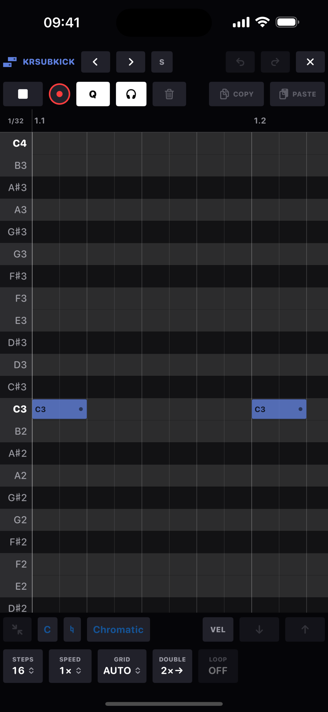
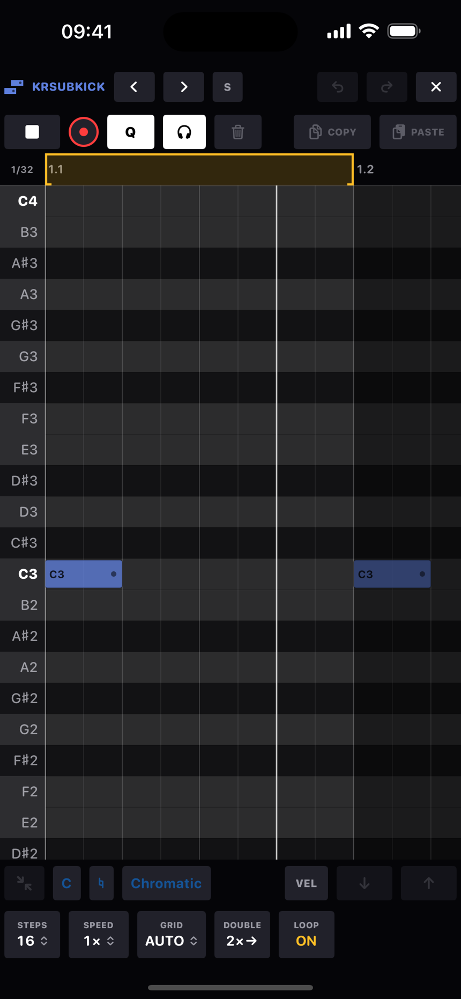
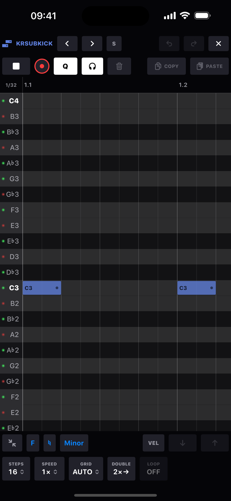

Piano roll
A full-screen note editor over the same trigs the step grid edits. Nothing is copied or duplicated; it's another view of the same pattern. A "note" here is one voice of a trig's chord. The trig owns the step, and each voice can have its own gate and nudge.
Open it from the roll button in the clipboard row above the step grid. The header has the track name with chevrons to go to the previous or next track (16 wraps round to 1), an S for solo, the roll's own undo and redo, and ✕ to close. The row under that is the transport: play, record, Q, the headphones toggle, trash, COPY and PASTE. Along the bottom are the scale chips (the root letter, ♭ ♮ ♯, and the scale name), the loop settings and the selection tools. On a wide screen they all fit on one row; on a phone held upright they take two.
Each note wears its name (C3, F♯4) when there's room beside the gate handle, dark on loud notes and light on quiet ones. The grid and the ruler count musical time, so on a 2× track a step is a 1/32 and a bar is 32 steps, and the readout in the corner where the ruler meets the pitch gutter tells you the current grid.

Gestures
| Gesture | Result |
|---|---|
| Tap an empty square | Parks the paste cursor there. |
| Tap the same square again | Adds a note there, snapped to the grid. |
| RETRIG, in the bottom row, with notes selected | Opens the retrig menu for the selection: OFF or a rate from 1/16 to 1/64T, plus a RAMP that fades the run UP, holds it FLAT or fades it DOWN. The rate plays until the gate ends, so stretch the note for a longer roll. The divider lines redraw as you pick. It's per trig, so a chord's voices roll together, and the button lights amber while the selected note rolls. A trig can't hold the same pitch twice, because the sub-hits are the retrigs. |
| Tap a note | Selects it and latches its step, so the TRG panel, p-locks and any hardware mappings now point at it. Plays it if headphones are on. |
| Tap a selected note | Deselects it. Deleting is on the trash chip. |
| Tap the pitch gutter | Selects every note on that row and plays the pitch, whether there are notes or not. The gutter is a keyboard too. |
| Hold on empty space, then drag | Marquee select, in cyan dashes. The selection latches and plays when you let go. |
| Drag a note | Moves it. Grab a member of a selection and the whole group comes along. |
| Drag a note's right edge | Stretches the gate to the grid. A group stretches by the same amount. |
| Drag empty space | Pans. Pinch over the grid to zoom time, anchored under your fingers. |
| Pinch in the pitch gutter | Zooms the row height between 14 and 60 points, keeping the pitch under your fingers where it is. Note names scale with the rows. |
| Drag along the ruler | Draws a loop brace (below). Drag a bracket to move one end, or drag between the brackets to slide the whole region. |
Loop braces
Dragging along the ruler draws a pair of brackets, which is a section loop in musical time, so every other track replays the same bars. They're amber while the loop is on (half strength until the bar line arrives) and grey while it's off. The braces stay where they are when you switch the loop off, so switching it back on doesn't need a redraw. Each bracket moves on its own, the span between them slides the region, and everything snaps to the current grid.
- LOOP reads ON or OFF and toggles the loop over the braced span. If nothing is braced yet, a tap braces the selected notes, and a long press re-braces the selection whenever you like.
- Drawing a fresh brace switches the loop on. Adjusting an existing one leaves it as it was.
- While the loop is on, the grid outside the region dims.

The velocity lane
Tap VEL in the bottom bar and a lane opens under the grid with one stem per trig on the same timeline, panning and zooming with the grid. Notes show their velocity in the grid too: loud ones are solid, quiet ones translucent, and ghosts are hollow with a dashed edge.
- Drag a stem up or down to set that trig's velocity. The value shows in the lane's gutter.
- Sweep across stems to paint a curve over many trigs in one go. A crescendo is one pass.
- With a selection, only the selected stems respond, and dragging any one of them moves the whole selection together so the dynamics between notes are kept.
- Drag a stem to the floor for a GHOST (velocity 0), which is silent until the live velocity offset lifts it. Ghost stems are hollow nubs on the baseline.
- Velocity is per note. A chord's voices stack their stems on the same tick and you grab whichever handle is nearest your finger, so you can have quiet inner voices under a loud top note. A voice without its own value follows the trig's, which follows the track default. Painting a sweep writes every voice it crosses.
- Lane edits go through the roll's own UNDO.
Grid, snap and the Q button
- GRID on AUTO gets finer as you zoom in: 1/16, then 1/32, then 1/64. Or pin a division: 1/8, 1/16, 1/32, 1/64, or the triplets 1/8T, 1/16T and 1/32T. The corner readout shows the division in musical time.
- SPEED changes the track's speed for this pattern from inside the roll, and the grid, ruler and readout follow.
- Q is about dropping single notes. Lit, a note you drag snaps to the grid. Unlit, it lands exactly where your finger leaves it and the offset is written as the note's nudge. Group drags never snap, whatever Q says: a selection keeps its internal feel and lands exactly where you drop it.
Scales and note names
The three scale chips in the bottom bar set the pattern's key: the root letter, an accidental (♭, ♮ or ♯) and the scale itself, from Major and Minor through the modes to things like Hungarian Minor and Minor Bebop, or Chromatic for no scale at all. With a scale set, every row in the pitch gutter gets a little LED on its left edge, green if the pitch is in the scale and red if it isn't, and the live keyboard shows the same LEDs on its keys.
The note names follow the key, the way a musician would write them. F minor shows A♭, B♭, D♭ and E♭; G major shows F♯. If you pick a root with an accidental, say B♭, the names keep the spelling you gave the root. With no scale, or in a key that could go either way, the ♭ and ♯ chips decide how accidentals are written everywhere in the app.

Chords and the no-overlap rule
- Notes on the same step make a chord, up to 6 voices per trig. Each voice can have its own gate and nudge, and voice 1's values are the step's own.
- Two notes of the same pitch never overlap. A note you move, paste or stretch takes its lane, and any same-pitch note whose span it touches gives way. Those notes are only deleted once you drop the selection: while it's still selected, moving it on again puts back everything it no longer covers, so you can walk a group over other notes with the arrows without eating them. Members of a group never eat each other.
- Moving a trig you've fully selected carries everything it owns: locks, velocity, condition, per-voice offsets. Dragging one voice out of a chord takes only that voice, and landing on an occupied step joins its chord.
Selection tools
- Undo and redo. The roll keeps its own stack of 64 snapshots, separate from the app's. Closing the roll hands you back with the app's stack untouched.
- COPY and PASTE use the app-wide step clipboard, so notes round-trip with the step grid. Paste lands at the cursor if you've parked one, in pitch as well as time (the copied notes transpose so the lowest sits on the cursor's row), otherwise just after the selection. Pasting onto occupied steps merges: new pitches join the chord up to the six-voice limit, matching pitches take the pasted gate and velocity, and nothing that was there is lost. The pasted notes come back selected, ready to drag.
- Trash deletes the whole selection as one undo step.
- Headphones plays notes as you select or add them, through the track's own voice at their velocities, without recording anything. The setting is remembered per device.
Range
Rows run from C-2 up to C8, with middle C called C3. C rows are bold and the row stripes follow the keyboard's black and white keys. The ruler counts bar.beat, and everything past the loop end is darkened. An amber dot on a note means the trig has p-locks.